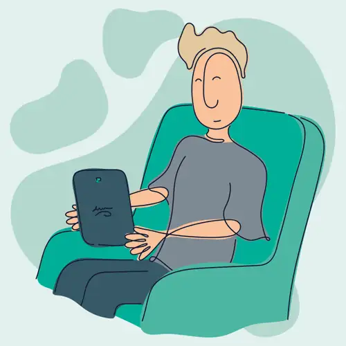
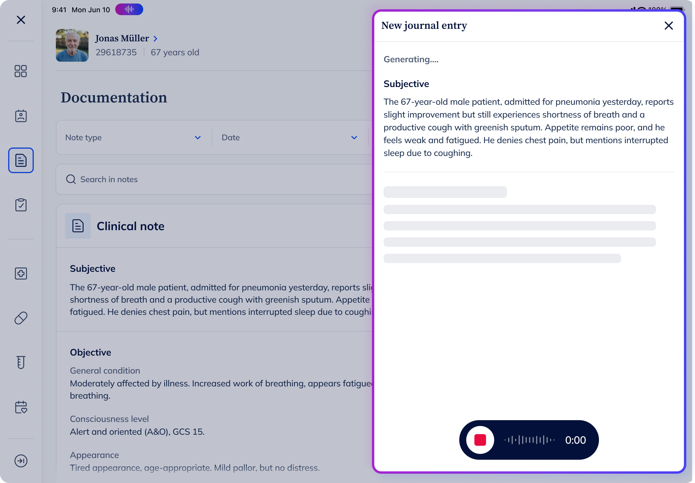
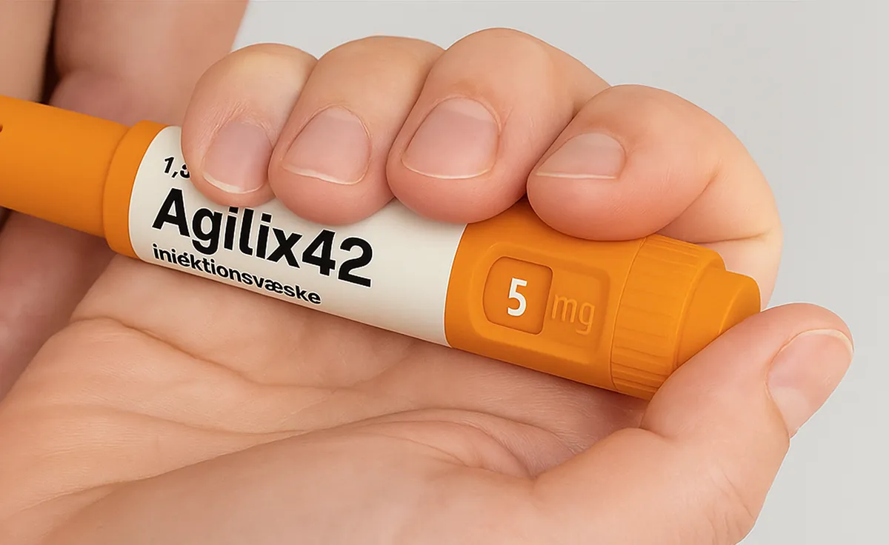
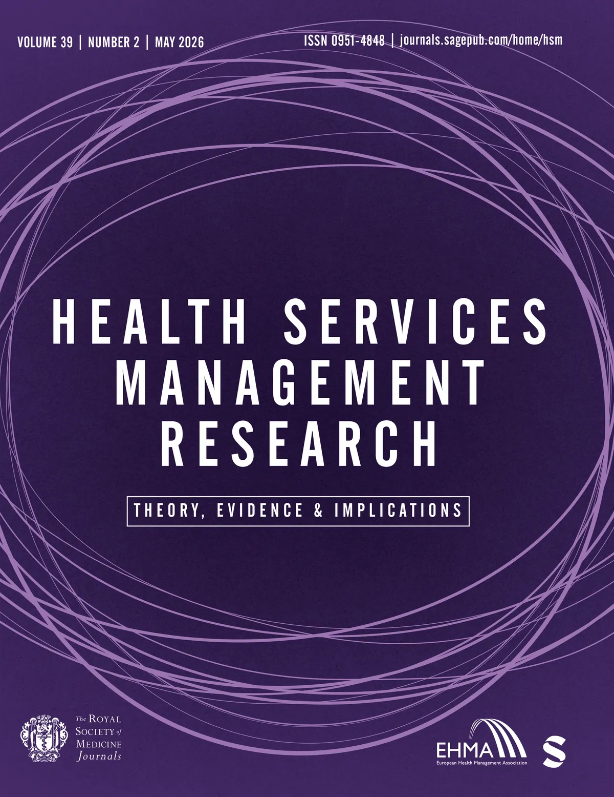

Medical doctor turned
Product Designer
I build products that create measurable outcomes for people and business in Health, FinTech, Energy, and beyond.
Selected work
Projects I'm proud of





How I work
From understanding
to measurable impact
I start with the business, the market, and the people, then work towards a solution that delivers real outcomes.
About me
From diagnosis
to product strategy

5+ years of experience at the intersection of healthcare, design, and technology. I specialise in product vision and strategy, aligning business objectives with user needs through rigorous research, prototyping, and data-driven validation.
I made the switch from medical doctor to product designer, because I realised that the biggest problems in healthcare wouldn't be solved one patient at a time. They'd be solved through technology and design.
That shift taught me that the skills that make you good at healthcare products make you good at any complex, regulated industry. Health, fintech, energy. They all involve multiple user groups with intertwined journeys, sensitive data, heavy regulation, and real consequences when you get it wrong. The complexity is the same. So is the opportunity to make a meaningful difference for a lot of people.
But understanding a problem and designing a solution isn't enough. If the impact is going to last, it has to be tied to a viable business. That's the part I care about most. Building products that create measurable outcomes for people and for the organisations behind them. A great product that can't sustain itself isn't great. It's a pilot that ends.
Get in touch
Connect on LinkedIn →